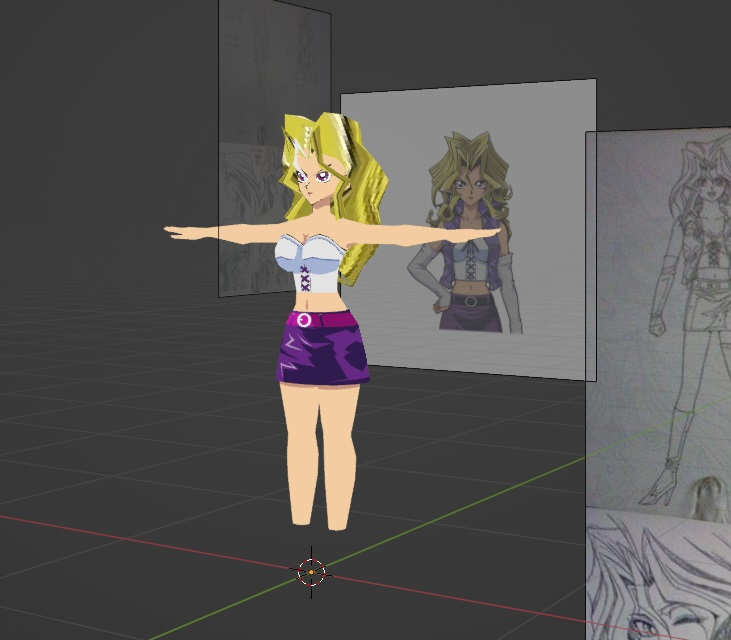

I'M BACK~~~~~~~
And with(out) a vengengeanenennence~!!!!!!!
but yes, I have returned after being really burned out of doing this. I haven't touched any of the html for this site in months, but I've been thinking about it for a while so I've decided to return and make another "diary" entry lol. My mental health has partially improved too since then so hopefully I can write something a bit less unhinged. I'll start with a bit of news and what I've been doing, then I'll move on to other stuff.
~~~
First off, I think I want to keep on having a really small vision for this site. Just keep on doing this kinda blog type of thing. Obviously I still want to try to make it a cooler place, but I'm not going to pressure myself too hard to make it the coolest indie site on the planet, that's just too much pressure on top of what I already do everyday. I also intend to keep the site low-end and offline only, mostly because I don't know a thing about JavaScript and backends.
Secondly, I'm still working on the Touhou game, but development has slowed down quite a bit. Partially because working with Godot-Vita is a pain in the ass, but also because I want to focus on coming up with cooler ideas for the game and polishing it until it's to a much more playable quality. I've also decided to let go of any deadlines that I originally had for the game. It will be out when it's out!
Third, I want to generally work on games the same way I did when I was younger, mostly doing it for fun and not really to please others. Of course, pleasing others makes me happy too, but I don't want to rely on others for my own self fulfillment in life. So expect small little projects to come out before the Touhou game does. For example, I want to try making a small sonic fangame engine, then maybe make a few levels for it and ship it for PSVita and Android / PC. I also want to try drawing a few small one-shot comics, just for fun. Like maybe just simple four panel strips that I can put on this site to make it a little bit fun.
~~~
Man, these entries can range so widely in how fun they are to make. Whenever I'm really full of energy and ideas, I just keep on typing, and typing, and typing until I realize I've written 300 words already but other times I feel like I have to push myself a bit. I guess that's just how things are in life sometimes though. Though this site is meant to be fun for me too, so I don't think pushing myself hard is good. That's also kinda the same for basically any kind of creative work though. When you're full of ideas, the only thing you want to do is express them, whether it's a drawing, a song, movie, video, book, game, any creative work. But when you commercialize / monetize creativity it no longer becomes fun and free expresssion. It starts to become "what will the people enjoy?", or "What will sell the best?" instead of being your own canvas, free for you to do anything on. I think I tend to fall into that trap a whole lot, even though I've never published anything I've made. Then I typically just crumble onto myself and quit the project all together, no matter how much fun I originally had making it. That's what I seriously want to avoid with the Touhou game... but isn't putting that restriction also in part commercializing my own creative work? ..Or atleast trying to turn something that's meant to be fun for me, into something that needs to meet certain points and expectations? It kind of paradoxes itself like that. Do creative works need some kind of order and restriction to even be realized? I've thought about that a lot, and I think the answer to that question is.. mostly, yes.
Take a painting for example. Say, the painter starts with a certain vision, but as they continue painting, their ideas, state of mind and vision for the painting drastically shift. So much so, that they decide to stop painting it. Is the unfinished painting still a fully complete piece of art? Is it a fully realized painting? The answer to that may differ to many, but I think not... well.. sort of. Art is anything that is an expresssion of emotion. That emotion can be happy, sad, angry, greedy, weak, strong, neutral, etc. It is still art. But the vision of this art piece is unfinished. Incomplete. Therefore, it is not fully realized. That's what I think.
..Oof, sorry for that long tangent about art or whatever. My point is, I wanna have fun :). Regardless of what other people want from me. I want to be a creator not just for others, but for strange fire burning inside me to create.
lol.
~~~
Anyways, here's a WIP 3D model of Mai from Yu-Gi-Oh.

I don't think I've ever mentioned this, but I tend to use older versions of software not because the newer versions suck or anything, but because they're easier for my laptop to run lol. For example, I use Blender 3.5 instead of 4.x and Godot 3.5 instead of 4.x as well. Godot 4 especially doesn't jive well with my PC, using Vulkan and all. Actually, both Godot 4 and Blender 4 use Vulkan, but Blender is just more optimized ^^;
But back to the 3d model, I actually started it a whileeee ago, but I haven't done too much work on it lately because I'm terrified of modelling that hair..... I just kinda put in a place holder for a while, but looking at my references and screenshots from the anime.... man..... I can't do that in 3d!!!!! Or maybe I can, and I'm just scared.. I tend to really struggle modelling really crazy anime hair, unless I designed the character because of how hard it is to comprehend the 3d shape. I just don't understand how to make that in 3D..... but I'll try soon anyways!
I also recently (recently in quotation marks lol) posted some art of Shadow on my pixiv. It was actually something I sketched last year, but only did the rendering a few months ago. I'm really happy with how it turned out!! It was sketched around the time SxSh gens was announced and Shadow's doom wings were just unveiled so it looks a bit in accurate, but yeah!! I really want to experiment with my art style more and more, instead of doing that lame ass cel-shading I did for the '06 aniversary and super sonic things on my pixiv. Speaking of which.... I need to draw more often man...... I really like making full pieces but I never do it, so my pixiv is really empty lol. I think I'll draw something for it today actually!!!! I hope...
Ah, and also, here's today's special thing:
~~ SONG OF THE ENTRY ~~
FLY ME TO THE MOON (Aki Jungle Version) - Neon Genesis Evangelion Soundtrack
An alternate version of "Fly me to the moon", the standard ending theme for NGE. Featuring haunting synths, beautiful vocals and the usual jungle beats! This is my favourite iteration of this theme, so make sure to give it a listen!
SONG LINK ::
YouTube (Source 1)
YouTube (Source 2)
==========
For every entry going forward, I'm going have a song reccomendation for you all to listen to! If possible, I'll provide an mp3 to listen to, but for copyrighted songs I obviously can't :(.....
I really want to include fun stuff like this into every entry here so you can have something fun to look forward to every time you hop on here ^v^!
Though sadly, I'll have to end things here... I don't want this one to end up too long, and also because I don't wanna take too much time on it either............
Thank you as always for reading through these, I hope you had a good time!
But until next time... ciao for now!!
Return to the Chronicle.